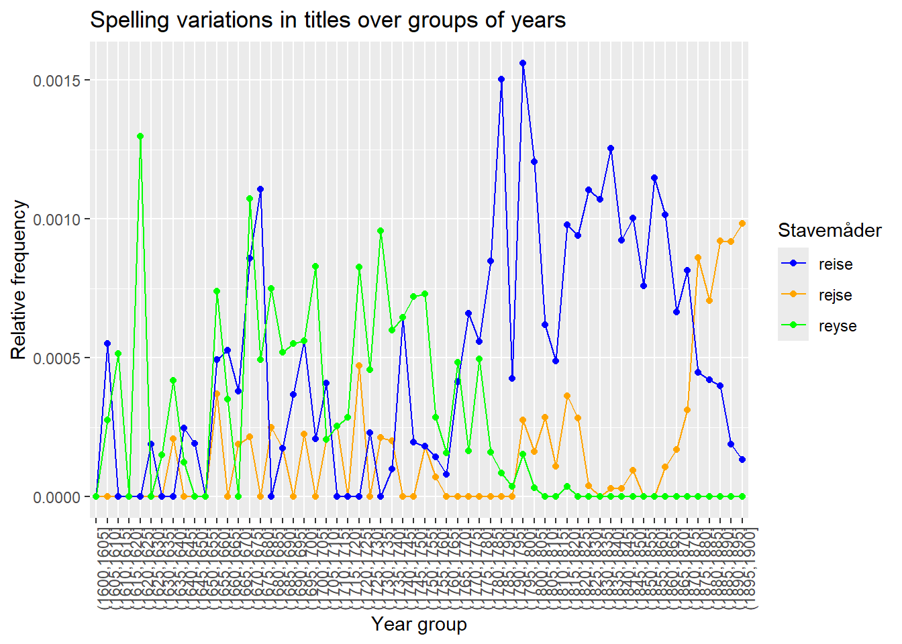

Spelling has evolved throughout history, and that is what we will explore in this notebook.
We can use a visualization to gain insight into how the different spellings of various words have changed over time. We begin by deciding which words’ evolution we want to investigate. We do this by looking up a dictionary that contains information about old spellings. Ordbog over det Danske Sprog - historisk ordbog 1700 - 1950 is such a dictionary.
Click on the link to go to the dictionary. Enter a word in the search field. For example, it could be the word “rejse” (travel). You can read that in addition to writing the word as rejse, we have previously written it both as “reise” and “reyse”.
In this way, we can create a list of different historical spellings of the word “rejse”; ‘rejse’, ‘reyse’, and ‘reise’.
We begin by loading the dataset, which is found in the file ‘kb_metadata_dan_filtered.csv’. Try to read the documentation in the script below while you run the code through. In the end, you will get a nice visualization. Can you modify the script so that you can create a visualization of the development of other words?
If you need further assistance, feel free to ask!
# import librarieslibrary(tidyverse)
── Attaching core tidyverse packages ──────────────────────── tidyverse 2.0.0 ──
✔ dplyr 1.1.4 ✔ readr 2.1.5
✔ forcats 1.0.0 ✔ stringr 1.5.1
✔ ggplot2 3.5.1 ✔ tibble 3.2.1
✔ lubridate 1.9.3 ✔ tidyr 1.3.1
✔ purrr 1.0.2
── Conflicts ────────────────────────────────────────── tidyverse_conflicts() ──
✖ dplyr::filter() masks stats::filter()
✖ dplyr::lag() masks stats::lag()
ℹ Use the conflicted package (<http://conflicted.r-lib.org/>) to force all conflicts to become errors
# read the data setdf <-read.csv("data/kb_metadata_dan_filtered.csv", encoding ="UTF-8")
# Create a subset of the dataset (you do not need to use all columns) subset <- df %>%select(title, year_st)
# Filter rows that have NaN values in 'year_st'subset <- subset %>%drop_na(year_st)
# Sort the dataset based on the 'year_st' column so that lowest value is at the topsubset <- subset %>%arrange(year_st)
# Inspect the datasetglimpse(subset)
Rows: 85,910
Columns: 2
$ title <chr> "Christelig Levnets-Regler til hver Dag i Ugen : Uddragne af C…
$ year_st <int> 1050, 1289, 1337, 1595, 1601, 1601, 1601, 1601, 1601, 1601, 16…
# Notice that there are data errors in the 'year_st' column, so we remove years before 1600 and after 1900.subset <- subset %>%filter(year_st>=1600, year_st<=1900)
# Inspect the datasetglimpse(subset)
Rows: 85,861
Columns: 2
$ title <chr> "En Undervisning aff den Hellige scrifft, hvad mand døme skal …
$ year_st <int> 1601, 1601, 1601, 1601, 1601, 1601, 1601, 1601, 1601, 1601, 16…
!NB LARS - TJEK LIGE AT INTERVALLERNE ER DE SAMME!
# Add a column with a grouping of years - interval of 5 yearssubset <- subset %>%mutate(year_group =cut(year_st, breaks =seq(from =1600, to=1900, by=5)))
# Group by 'year_group', aggregate the 'title' column, and send back to dataframegrouped_subset <- subset %>%group_by(year_group) %>%summarise(title =paste(title, collapse =" "))
grouped_subset
# A tibble: 60 × 2
year_group title
<fct> <chr>
1 (1600,1605] En Undervisning aff den Hellige scrifft, hvad mand døme skal om …
2 (1605,1610] [Almanakker 1606, 1641, 1652-54]. Gradual : en almindelig Sangbo…
3 (1610,1615] XXXIIII Christelige oc skøne Liigpredickener udi hvilcke der fin…
4 (1615,1620] En liden nyttig Haandbog : indeholdendis allehaande gudelige Exc…
5 (1620,1625] Poenitentzis Graad, met trende Hierte Rob, høyelige fornøden i d…
6 (1625,1630] [Den ny danske Psalmebog] / [Hans Thomissøn]. Anser Martiniana, …
7 (1630,1635] Hussholdings Calender om hvad en Hussholder til sin Aufl, Fructe…
8 (1635,1640] Collegium Philosophorum. Hedenske Philosophia eller Vijsdom. Udi…
9 (1640,1645] Told-Rulle udi Øresund, huor effter annammis Told aff de Engelsk…
10 (1645,1650] En konstig oc artig ny Regne-Bog, udi Tall, Maader, Vect oc Pend…
# ℹ 50 more rows
# Count how many times a certain word appears in the titlesgrouped_subset <- grouped_subset %>%mutate(title =str_to_lower(title)) %>%mutate(antal_ord =str_count(title, '\\w+'),rejse =str_count(title, "rejse")/antal_ord,reise =str_count(title, "reise")/antal_ord, reyse =str_count(title, "reyse")/antal_ord) %>%select(-antal_ord)
# Inspect the datasetgrouped_subset
# A tibble: 60 × 5
year_group title rejse reise reyse
<fct> <chr> <dbl> <dbl> <dbl>
1 (1600,1605] en undervisning aff den hellige scrifft,… 0 0 0
2 (1605,1610] [almanakker 1606, 1641, 1652-54]. gradua… 0 5.51e-4 2.75e-4
3 (1610,1615] xxxiiii christelige oc skøne liigpredick… 0 0 5.14e-4
4 (1615,1620] en liden nyttig haandbog : indeholdendis… 0 0 0
5 (1620,1625] poenitentzis graad, met trende hierte ro… 0 0 1.30e-3
6 (1625,1630] [den ny danske psalmebog] / [hans thomis… 0 1.89e-4 0
7 (1630,1635] hussholdings calender om hvad en husshol… 0 0 1.51e-4
8 (1635,1640] collegium philosophorum. hedenske philos… 2.09e-4 0 4.17e-4
9 (1640,1645] told-rulle udi øresund, huor effter anna… 0 2.48e-4 1.24e-4
10 (1645,1650] en konstig oc artig ny regne-bog, udi ta… 0 1.92e-4 0
# ℹ 50 more rows
grouped_subset %>%ggplot(aes(x = year_group)) +geom_point(aes(y = rejse, color ="rejse")) +geom_line(aes(y = rejse, color ="rejse", group ="all")) +geom_point(aes(y = reise, color ="reise")) +geom_line(aes(y = reise, color ="reise", group ="all")) +geom_point(aes(y = reyse, color ="reyse")) +geom_line(aes(y = reyse, color ="reyse", group ="all")) +ggtitle("Spelling variations in titles over groups of years")+labs(x ="Year group",y ="Relative frequency",color ="Stavemåder")+theme(axis.text.x =element_text(angle =90)) +scale_color_manual(values =c("rejse"="orange","reise"="blue","reyse"="green") )

Eller alternativt
grouped_subset %>%pivot_longer(rejse:reyse, names_to ="stavemåde", values_to ="n") %>%ggplot(aes(x = year_group, y = n, color = stavemåde, group = stavemåde)) +geom_point() +geom_line() +ggtitle("Spelling variations in titles over groups of years")+labs(x ="Year group",y ="Relative frequency",color ="Stavemåder")+theme(axis.text.x =element_text(angle =90)) +scale_x_discrete(labels =function(x){ labels <-gsub("[\\(\\)\\[\\]]", "", x) # Fjern parenteser og firkantede klammer labels[seq(1, length(labels), by =2)] <-""# Fjern hver anden labelreturn(labels) })